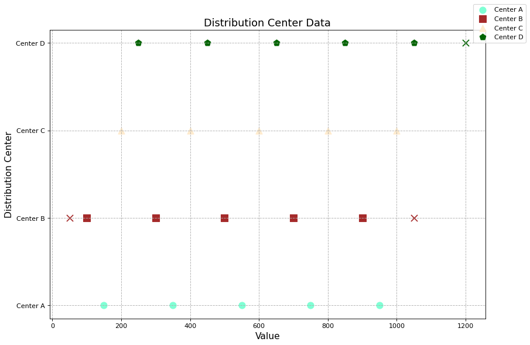

Total failure cases of factor "answer": 1
| ID | Chart | Question | Additional Information | Pitfalls | Most relevant pitfall |
323.png |
 |
Which condition is met by fewer centers: Median < 550 or Median > 600?
|
{
"Ground Truth": "Median < 550",
"Prediction": "Neither"
}
|
### Potential Pitfalls in the Chart Image: 1. **Overlapping Markers**: The markers for different centers may visually overlap, making it difficult to distinguish between them at first glance. 2. **Color Similarity**: The colors chosen for some of the markers might be too similar, causing confusion when trying to differentiate the data points visually. 3. **Absence of Explicit Median Labels**: The chart does not explicitly label which data point corresponds to the median value for each center, leaving viewers to infer based on relative positioning. 4. **Outliers Misinterpretation**: Outliers are marked distinctly with an 'X', but they might distract from focusing on the median values if not carefully considered. ### Most Relevant Pitfall: The most relevant pitfall leading to the model's incorrect prediction is the **absence of explicit median labels**. Without clear labels indicating the median value for each distribution center, it becomes challenging to quickly determine how many centers have a median less than 550 or greater than 600. This lack of clarity can lead to misinterpretations, such as concluding "Neither" condition is met when the visual differentiation isn't immediately obvious. <most_relevant>Absence of explicit median labels</most_relevant> |
Absence of explicit median labels |